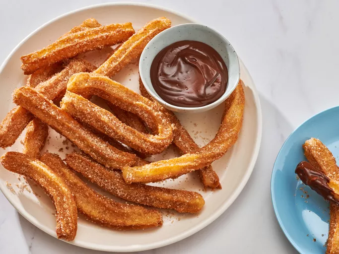

Churros

Description
A churro is a cinnamon- and sugar-topped fried pastry dough stick with Spanish and Portuguese origins. Churros are similar to doughnuts, but they have ridges because they are piped out of a pastry bag. Because they are fried instead of baked, churros have a fluffy and tender interior with a satisfyingly crispy exterior.
Ingredients
- 1 cup water
- 2 1/2 tablespoons vegetable oil
- 1/2 teaspoon salt
- 1 cup all-purpose flour
- 2 quarts oil for frying
- 1/2 cup white sugar, or to taste
- 1 teaspoon ground cinnamon
Steps
- Gather all ingredients.
- Combine water, 2 1/2 tablespoons sugar, 2 tablespoons vegetable oil, and salt in a small saucepan over medium heat; bring to a boil then remove from heat.
- Stir in flour, stirring constantly, until mixture forms a ball.
- Heat 2 quarts oil in a deep fryer or deep pot to 375 degrees F (190 degrees C). Transfer dough to a sturdy pastry bag fitted with a medium star tip.
- Carefully pipe dough, working in batches of a few 5- to 6-inch strips at a time, into the hot oil.
- Cook until golden; transfer churros to paper towels to drain using a spider or slotted spoon.
- Combine 1/2 cup sugar and cinnamon in a bowl; roll churros in cinnamon and sugar mixture. Serve warm.
Home